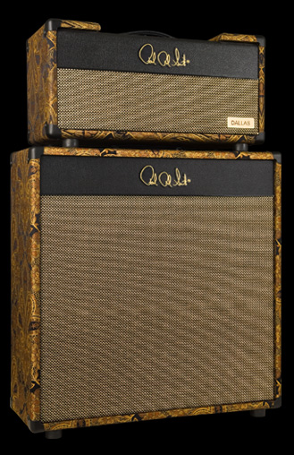

Reminiscent of classic 6L6 American reverb amps, our Dallas model offers sweet highs, solid lows and modest midrange. This model gives you an open 3D tone for huge sounding cleans. The Dallas amp leans toward the clean side but moderately overdrives nicely.